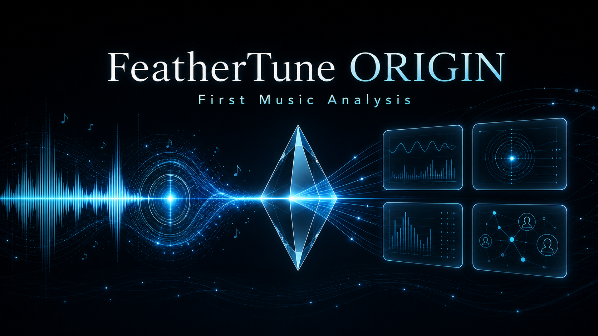

ORIGIN参加受付（最終検証中・もうすぐ）
ORIGIN登録（無料）は、受付開始に向けて最終検証中です。もうすぐ始まります。受付開始後は、登録特典として初回1回・1曲までORIGIN分析を無償で受けられます。開始のご案内は、このページとLPの「現在の状況」でお知らせします。
ORIGIN受付の準備状況を見る（もうすぐ） 実曲フル分析サンプルを見る
ORIGIN
無料ORIGIN登録で、登録特典として初回1回・1曲までORIGIN分析を無償で受けられます。あなたの楽曲を、FeatherTuneでの最初の記録として残します。分析範囲・サポート内容はTRIAL / MASTERと同等で、違いは提供条件のみです。
ORIGIN登録（無料）は、受付開始に向けて最終検証中です。もうすぐ始まります。受付開始後はフォーム回答とメールアドレスが正本となります。Discord参加は任意です。
現在の通常受付は日本国内向けです。海外在住の方、海外配信・海外権利が関係する楽曲、多言語対応が必要な場合は個別相談ください。
ORIGIN登録（無料）は、受付開始に向けて最終検証中です。もうすぐ始まります。受付開始後は、登録特典として初回1回・1曲までORIGIN分析を無償で受けられます。開始のご案内は、このページとLPの「現在の状況」でお知らせします。
ORIGIN受付の準備状況を見る（もうすぐ） 実曲フル分析サンプルを見るORIGIN登録（無料）は受付開始に向けて最終検証中で、もうすぐ始まります。受付開始後に参加希望を受け付け、ORIGIN番号を発行し、登録特典として初回1回・1曲までORIGIN分析を無償で受けられます。フォーム回答とメールアドレスが正本です。2曲目以降や継続利用はTRIAL / MASTERへ。ORIGIN無料枠が満員の場合も、一般会員としてTRIAL / MASTERをご利用いただけます。
ORIGIN受付の準備状況を見る（もうすぐ）ORIGIN番号は、ORIGIN-A001形式で発行されるFeatherTuneの永続ユーザー番号です。ORIGIN登録をしておくと、TRIAL / MASTERでも同じORIGIN番号で記録が引き継がれます。
ORIGINは初回1回・1曲の無料分析です。分析範囲・サポート内容はTRIAL / MASTERと同等で、違いは提供条件のみです。フォーム回答とメールアドレスが正本です。Discord参加は任意です。
ORIGIN無料分析は、各月100名さままでを受付の上限としています。定員に達した場合、お申し込みは翌月の受付（予約）へご案内します。翌月の予約枠は、TRIAL / MASTER をご購入の方を優先してご案内し、無料登録のみの方は有料ご購入の方の後にご案内が回ります（ご購入数による優先順位の違いはありません。複数ご購入でも優先度は同じです）。
ORIGIN無料枠が満員の場合でも、一般会員としてTRIAL / MASTER をご利用いただけます。無料分析の順番をお待ちいただかなくても、有料版で分析を受けられます。
通常受付は日本国内向けを基本とします。海外での利用、海外権利や多言語対応が関係するご相談は、内容を確認したうえで対応可否を判断します。
ORIGIN受付の準備状況を見る（もうすぐ）ORIGIN登録の特典は、無料分析だけではありません。ORIGIN登録された方は、FeatherTune Discordコミュニティにご参加いただけます。
・会員同士の交流
・ご自身の楽曲・レポートの宣伝（宣伝リンクは JASRAC 包括契約サイトに限ります）
・新オプションレポートの先行体験
など、創作を続ける仲間とつながる特典をご用意しています。Discord参加は任意です。無効な招待リンクを公開しないため、招待はORIGIN登録後の案内で共有します。
ORIGIN受付の準備状況を見る（もうすぐ）分析結果をシェアし、作品を見つめ直し、次の創作へつなげます。キリ番企画やORIGIN限定イベントなども準備中です。
ORIGIN参加希望の受付は、最終検証中でもうすぐ始まります。準備状況のご案内や個別相談がある場合のみ、メールでお問い合わせください。
ORIGIN受付の準備状況を見る（もうすぐ） ORIGIN先行受付にメールする 先行受付の案内を見るAI音楽ランキングサイト、ポッドキャスト、ラジオ、コンテスト、プレイリスト、コミュニティなどの主催者向けに、FeatherTune紹介とフィードバック報告を条件としたMONITOR枠を準備しています。
MONITOR枠の条件を見る